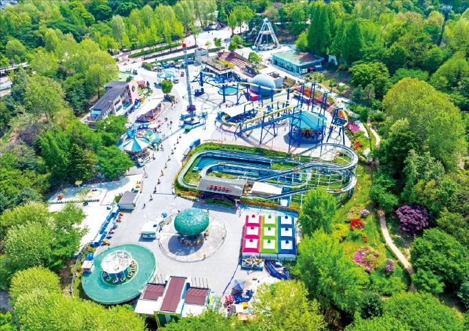

서울어린이대공원
서울 어린이대공원은 서울 광진구 능동에 위치한 53만㎡ 규모의 가족 테마공원으로, 1973년 어린이날에 개원했습니다.
도심 속 넓은 녹지와 동물원, 식물원, 놀이동산, 공연장 등을 갖추어 시민들의 대표적인 휴식처로 사랑받고 있습니다.

서울 어린이대공원은 서울 광진구 능동에 위치한 53만㎡ 규모의 가족 테마공원으로, 1973년 어린이날에 개원했습니다.
도심 속 넓은 녹지와 동물원, 식물원, 놀이동산, 공연장 등을 갖추어 시민들의 대표적인 휴식처로 사랑받고 있습니다.